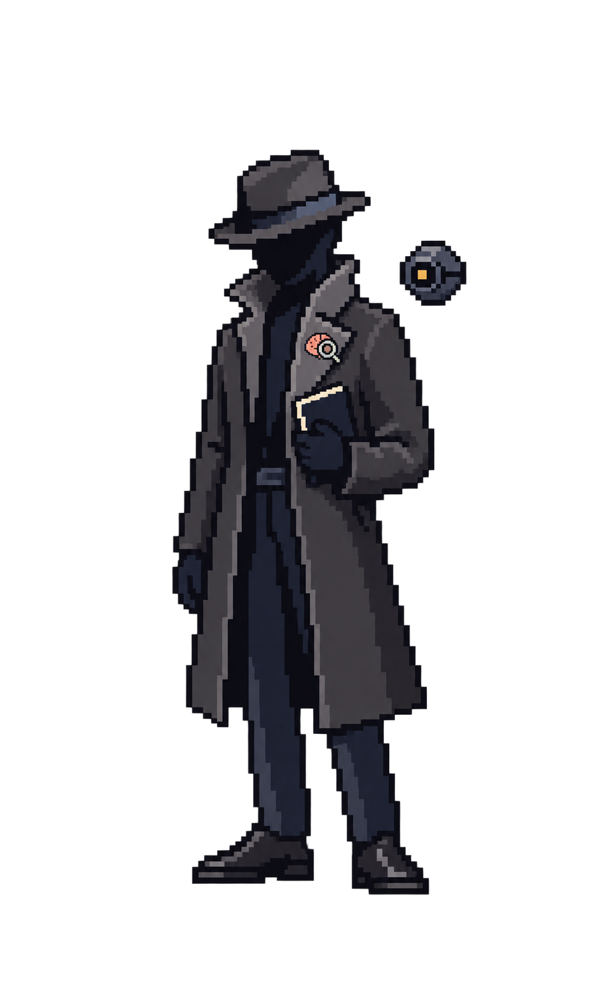

Palette
CANVAS
PANEL
PAPER
VERIFY
PENDING
REJECT
NeuroTrace / low-pixel system
这里保留设计稿的纸张、深蓝工作台、硬像素边框与受控状态色；不引入难以复现的纹理、柔光或游戏化动效。
Palette
Type + geometry
EVIDENCE / 08:42:17
研究结论以可读正文呈现；精确状态、按钮和数据标签使用像素等宽字。
Actions
<button class="nt-button nt-button--primary">开始调查</button>Signal
Input
Evidence
在受控睡眠时长条件下，干预组于工作记忆任务中表现出稳定提升。
条件：成年样本；连续 14 天；基线睡眠不足。
Progress
Trace posture



Operation feedback
Workbench / < 1024px
窄屏模式窄屏时保留“当前判断”与主操作；基线、执行流和卷宗改为明确可打开的上下文层，不并排压缩。